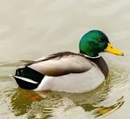
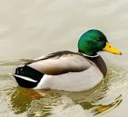

Honey bees are known for their construction of perennial colonial nests from wax, the large size of their colonies, and surplus production and storage of honey, distinguishing their hives as a prized foraging target of many animals, including honey badgers, bears and human hunter-gatherers. Only 8 surviving species of honey bee are recognized, with a total of 43 subspecies, though historically 7 to 11 species are recognized. Honey bees represent only a small fraction of the roughly20,000 known species of bees.
 



Bees are an incredibly diverse species and there are an estimated 20,000 species of bees present today. In this blog, we will provide you with a closer look at the entire lifecycle of the Italian honey bee (Apis mellifera liguistica). Although the Italian honey bees share the same lifecycle stages, it is important to note that the lifecycle of each honey bee is dependent on the time of year and its role within the colony.
Eggs are laid singly in a cell in a wax honeycomb, produced and shaped by the worker bees. Using her spermatheca, the queen can choose to fertilize the egg she is laying, usually depending on which cell she is laying it into. Drones develop from unfertilised eggs and are haploid, while females (queens and worker bees) develop from fertilised eggs and are diploid. Larvae are initially fed with royal jelly produced by worker bees, later switching to honey and pollen. The exception is a larva fed solely on royal jelly, which will develop into a queen bee. The larva undergoes several moultings before spinning a cocoon within the cell, and pupating. Young worker bees, sometimes called "nurse bees", clean the hive and feed the larvae. When their royal jelly-producing glands begin to atrophy, they begin building comb cells. Colonies are established not by solitary queens, as in most bees, but by groups known as "swarms", which consist of a mated queen and a large contingent of worker bees. This group moves en masse to a nest site which was scouted by worker bees beforehand and whose location is communicated with a special type of dance. Once the swarm arrives, they immediately construct a new wax comb and begin to raise new worker brood. This type of nest founding is not seen in any other living bee genus, though several groups of vespid wasps also found new nests by swarming (sometimes including multiple queens). Also, stingless bees will start new nests with large numbers of worker bees, but the nest is constructed before a queen is escorted to the site, and this worker force is not a true "swarm". Gallery